| Каталог | Индекс раздела |
| Назад | Оглавление | Вперед |
Целью лабораторной работы является получение практических навыков при использовании множественного наследования в языке С++.
| 1 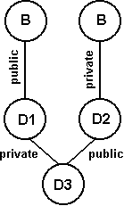 |
2 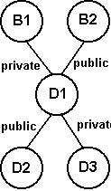 |
| 3 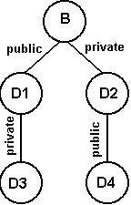 |
4 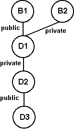 |
| 5 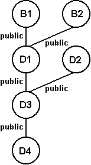 |
6 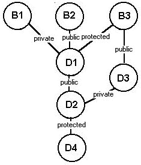 |
| 7 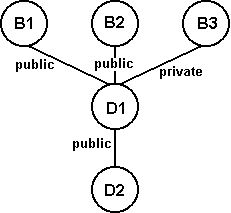 |
8 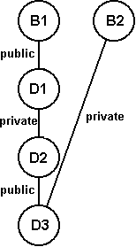 |
| 9 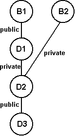 |
10 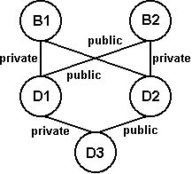 |
| 11 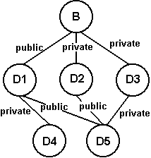 |
12 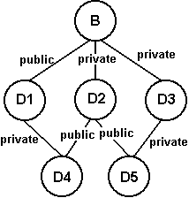 |
| 13 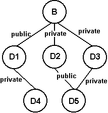 |
14 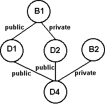 |
| 15 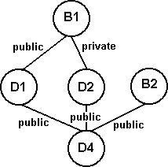 |
16 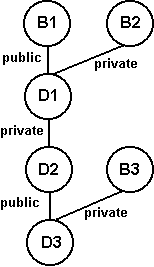 |
| 17 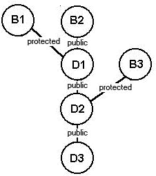 |
18 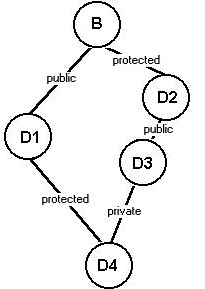 |
| 19 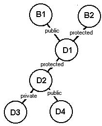 |
20 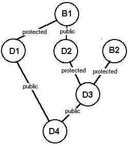 |
| 21 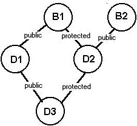 |
22 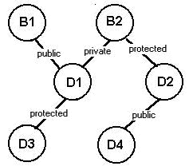 |
| 23 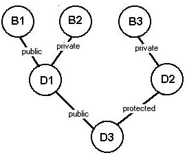 |
24 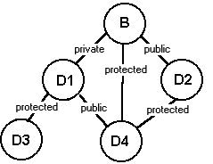 |
| 25 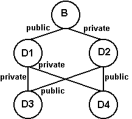 |
Необходимо построить иерархию классов согласно схеме наследования, приведенной в варианте задания.
Каждый класс должен содержать инициализирующий конструктор и функцию show для вывода значений.
Функция main должна иллюстрировать иерархию наследования.
class B{
int a;
public:
};
class D1: public B {
int b;
public:
};
class D2: private B{
int c;
public:
};
class D3: private D1, public D2 {
int d;
public:
};
class D4: public D2, private D1 {
int e;
public:
};
Создадим теперь во всех классах конструкторы, которые смогли бы по цепочке наследования инициализировать свои переменные и передавать остальные значения дальше вверх вплоть до конструктора базового класса.
B(int x) { a=x; }
D1(int x, int y) : B(y) { b=x;};
D2(int x, int y) : B(y) { c=x;};
D3(int x, int y, int z, int i, int j) : D1(y,z), D2(i,j) { d=x;}
D4(int x, int y, int z, int i, int j) : D1(y,z), D2(i,j) { e=x;}
Теперь добавим в каждый класс функцию show, которая бы выводила на экран переменную из секции private класса, которому принадлежит сама и вызывала бы функции show тех классов, которые стоят выше по иерархии наследования.
void show_B() { cout <<"B= "<< a << "\n"; }
void show_D1() { cout << "D1= "<< b << "\n"; show_B();}
void show_D2() { cout <<"D2= "<< c << "\n"; show_B();}
void show_D3() { cout << "D3= "<<d << "\n"; show_D1(); show_D2();}
void show_D4() { cout <<"D4= "<< e << "\n"; show_D1(); show_D2();}
#include <iostream.h>
#include <stdlib.h>
#include <conio.h>
class B{
int a;
public:
B() { };
B(int x) { a=x; }
void show_B() { cout <<"B= "<< a << "\n"; }
};
class D1: public B {
int b;
public:
D1(int x, int y) : B(y) { b=x;};
void show_D1() { cout <<"D1= "<< b << "\n"; show_B();}
};
class D2: private B{
int c;
public:
D2(int x, int y) : B(y) { c=x;};
void show_D2() { cout <<"D2= "<< c << "\n"; show_B();}
};
class D3: private D1, public D2 {
int d;
public:
D3(int x, int y, int z, int i, int j) : D1(y,z), D2(i,j) { d=x;}
void show_D3() { cout << "D3= "<<d << "\n"; show_D1(); show_D2();}
};
class D4: public D2, private D1 {
int e;
public:
D4(int x, int y, int z, int i, int j) : D1(y,z), D2(i,j) { e=x;}
void show_D4() { cout <<"D4= "<< e << "\n"; show_D1(); show_D2();}
};
main() {
clrscr();
D3 temp(100,200,300,400,500);
D4 temp1(1,2,3,4,5);
cout << "D3 temp(100,200,300,400,500);\n";
cout << "D4 temp1(1,2,3,4,5);\n";
cout<< "\nСледуя иерархии класса D3: \n";
temp.show_D3();
cout<< "\nСледуя иерархии класса D4\n";
temp1.show_D4();
getch();
return 0;
}
| Назад | Оглавление | Вперед |
| Каталог | Индекс раздела |